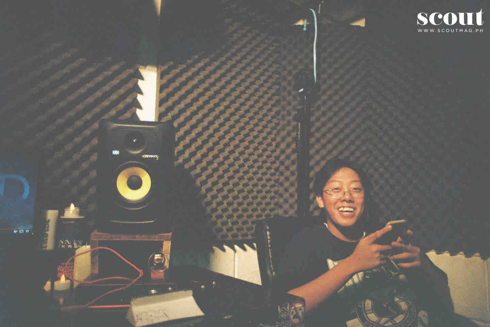
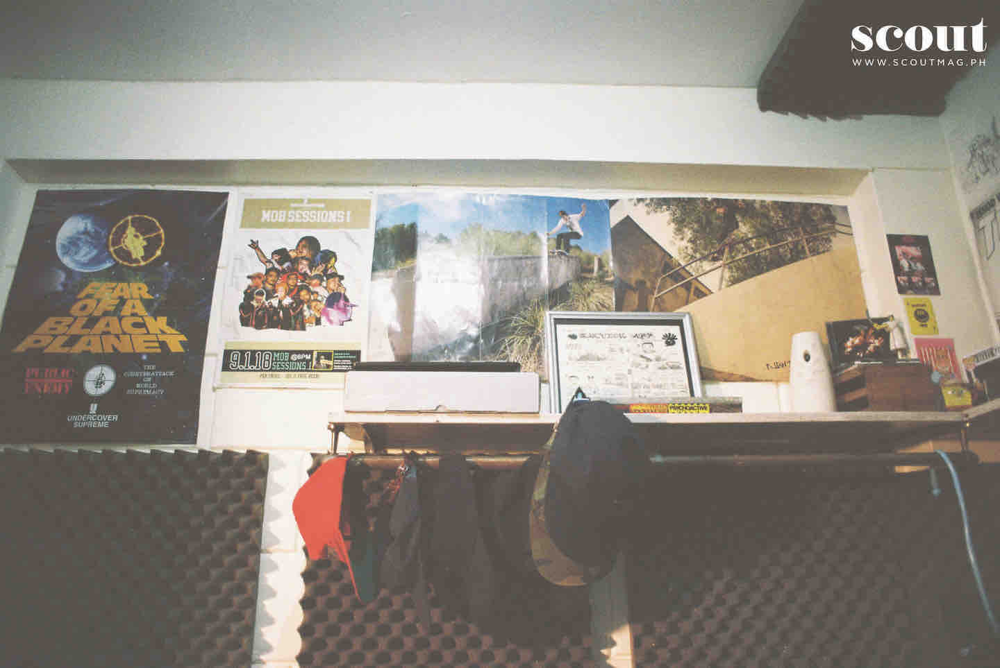
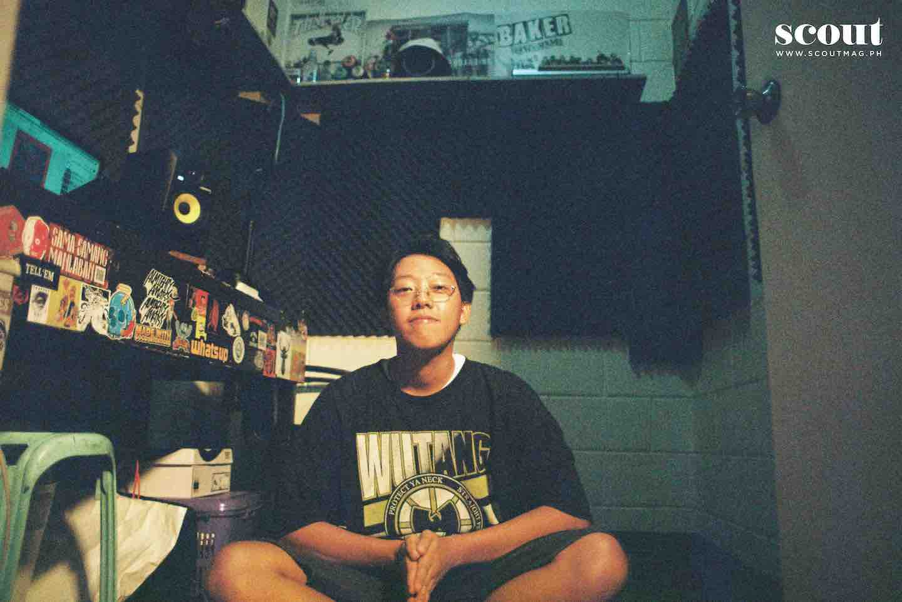

Waiian
"It's Hawaiian without the ha"

Waiian is the type of guy who’s easy to vibe with. At least, that’s what I felt at 11 in the morning, as he
offered us drinks and answered our questions in his Wu-Tang Clan shirt. The solo artist and member of
hip-hop group Kartell’em invited us to sit anywhere in his studio which was covered with stickers and
posters that doubles as an amalgam of his early influences like Tyga and Lil Wayne (and My Chemical
Romance at some point). He suddenly apologized for the lack of room, but still insisted on having us all
inside. “Even the whole Kartell’em stays here,” he revealed. I believe it..
For something that was built just August this year, Waiian’s space felt lived in. The walls were decorated
with his personalized visuals and the work desk lined with stickers and photos.. As he blasted Bambu,
Mac Miller, and Flatbush Zombies tracks, I check out the Kartell’em album “Tell’em Once” (he can’t pick
a favorite song), his favorite thinking chair, and a finger skateboard he enjoys playing with in between
breaks. His family recently moved into this house after 15 years in their old one. “This is my first time to
have my own room. And [so] I [told] my Kartell’em friends that we can set up the studio here. I don’t
have a room anymore. I’ve never had a room. I won’t ever need one; I need a studio. I need to feel
myself, I need to feel my family. I need to make music.”

Waiian’s sincerity in his craft was reflected not only his lyricism, but also his approach. “My goal every
time is to really put out what I want to say; dapat may data at nakalapat nang perpekto. The flow, the
sound. That’s why everything’s taking so long for me now. But I’m not perfect, and I’ll never be.” He
further highlighted kutob as a vague but also reliable measure for knowing when a song is good to go—
mainly because he pays attention to his feelings a lot. “Sometimes if you think too much, you can’t feel it
anymore.” And when he let us stay as long as we want to—in this studio he calls the “box room” that gets
filled with magic when creative juices flow—I’m reminded of what he looks forward to in the months to
come: “I’m just gonna perform and perform if the price is right. The music is free; you’re just gonna pay
me for my time.”

About Waiian
- name: Waiian
- gender: male
- Profession: Singer, Songwriter, Record producer
- Genres: hip-hop, rap
- Staus: Single